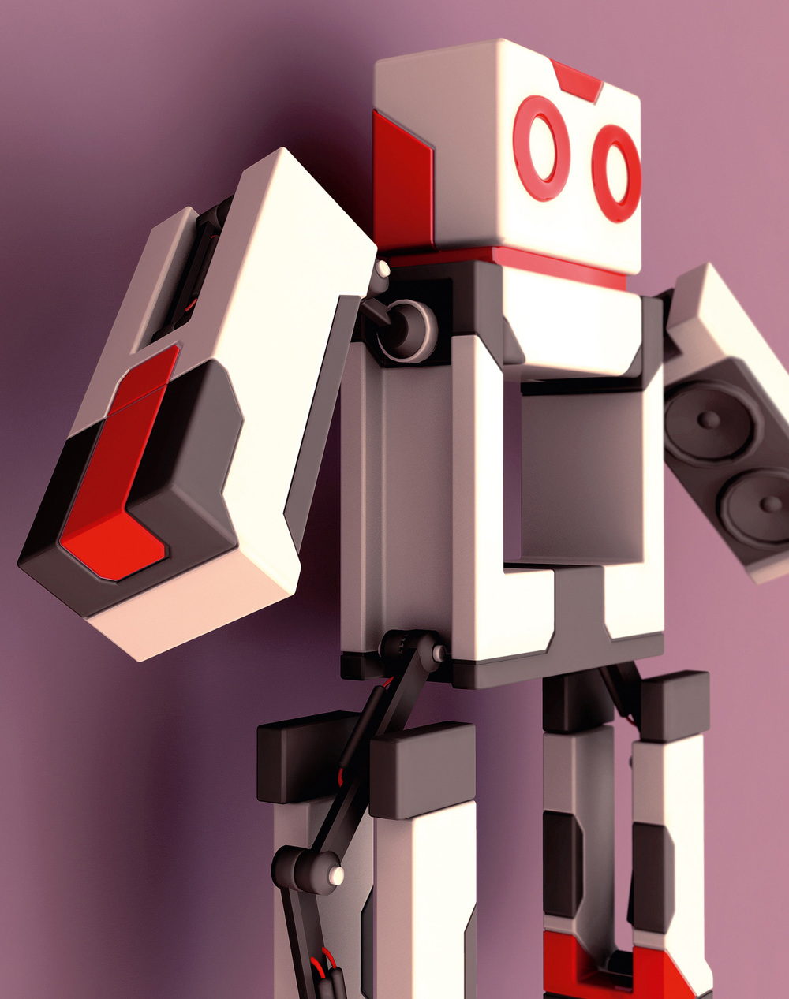
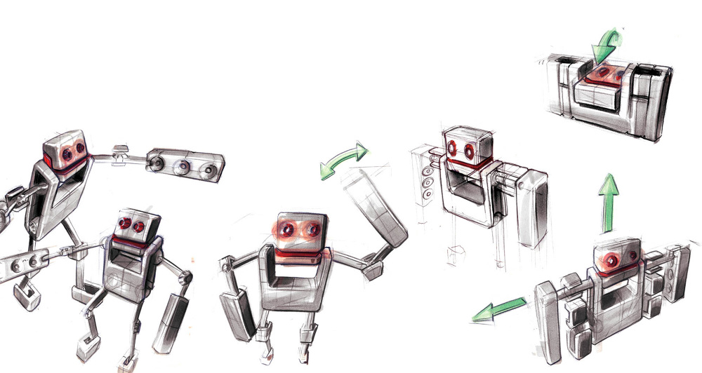
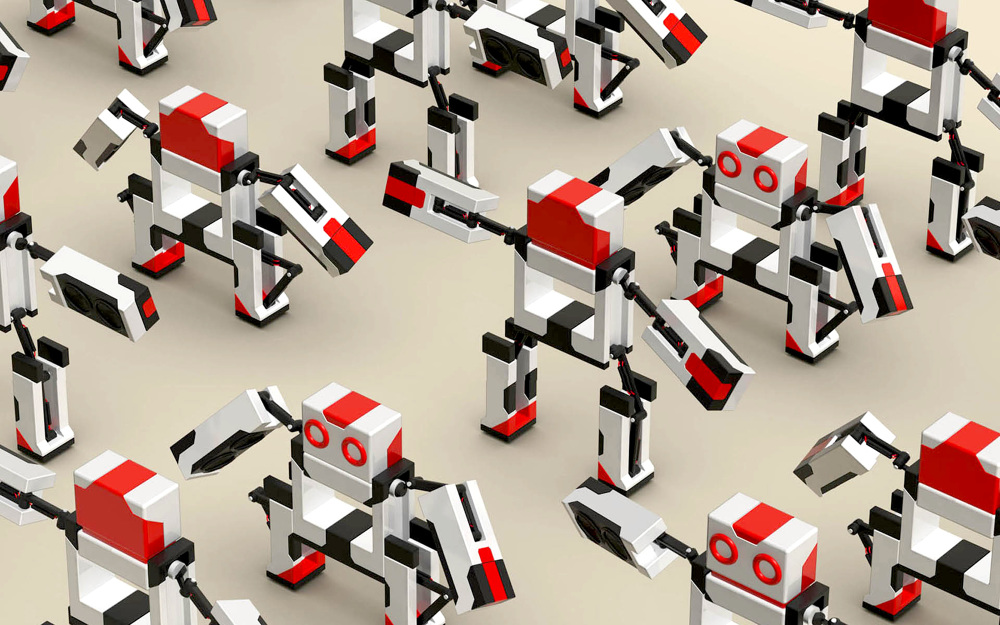
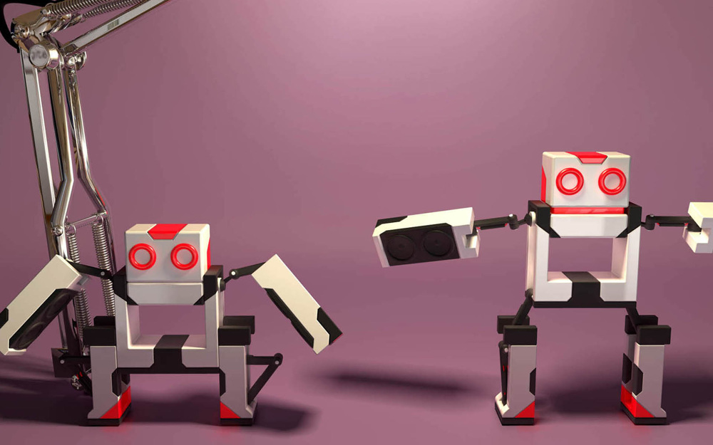
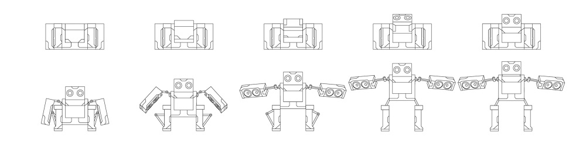

Musicbot





The musicbot is a small portable and boxy stereo. When activated the musicbot transforms into a standing robot and plays the music. Talking about the design the Musicbot is quite simple, boxy and graphic. Although his mouth is straight he seems to smile, that‘s why I like this robot so much.
Der Musikbot ist eine kleine, tragbare Stereoanlage in Quaderform. Sobald er aktiviert wird transformiert der Musikbot, wird zu einem stehenden Roboter und spielt die Musik ab. Trotz seiner einfachen, grafischen Form soll er raffiniert und sympathisch wirken. Was ich an diesem Roboter so mag: Obwohl sein Mund gerade ist scheint er zu lächeln.